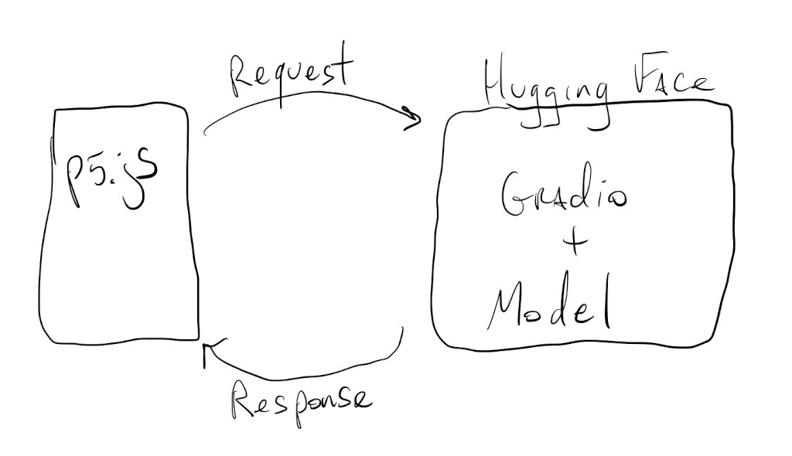
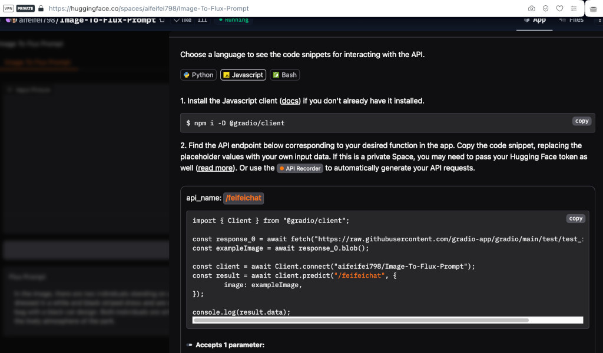
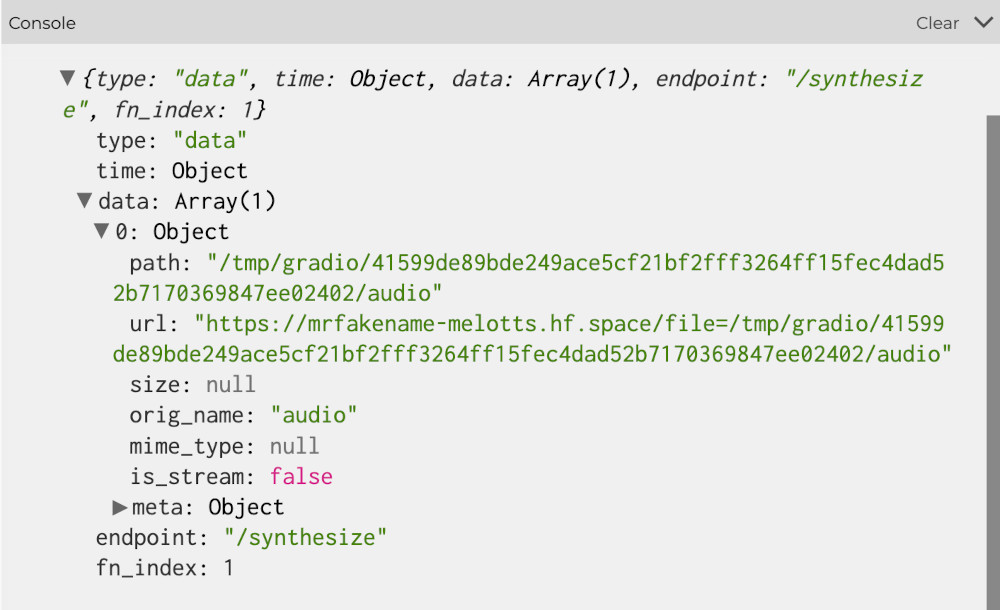

We can’t really talk about AI without talking about LLMs and diffusion models.
One step up in complexity from the models we just saw, these generative models usually require more resources to run. It doesn’t mean that we can’t use them in our sketches, but we have to offload their processing and execution to computers with large amounts of memory, faster processors and usually some GPUs.
We’ll do this by making API calls to servers or services that run these bigger models:

Let’s take a look at a few examples.
Besides being the GitHub of open source models, Hugging Face also hosts models that we can interact with through code and APIs.
This mostly happens through a library called Gradio. This library was developed to facilitate the creation of simple web interfaces for complex models, but when deployed to Hugging Face, Gradio apps also expose API endpoints that allow us to run models remotely.
We can start by looking here for different models that people have set up to run on the Hugging Face servers, and then figure out how to connect and interact with them from our sketches.
Let’s revisit our image description example:
In this example, not only did running the model on the browser freeze our sketch, the results were also not very accurate because it’s an older model.
We’ll use the same structure for our new sketch, so we can reuse a good portion of the code from above:
But this time let’s try the image description model hosted here.
The first thing we do is visit the model’s interface page and scroll down to the bottom until we see the Use via API button. Clicking on that button and then selecting the JavaScript option, we get something like this:

Again, we can’t import the Gradio library using the code they have there, but we can load it during preload() using:
let gUrl = "https://cdn.jsdelivr.net/npm/@gradio/client/dist/index.min.js";
let module = await import(gUrl);
Then, we can follow the rest of the code for setting up a client:
client = await module.Client.connect("aifeifei798/Image-To-Flux-Prompt");
Again, lots of await function calls… (see the concurrency tutorial for a refresher).
We are all set to call inference on our image with:
result = await client.predict("/feifeichat", {
image: exampleImage,
});
But !! the model expects an image blob (binary large object), not a p5.js image, nor an image dataURL like before.
In order to turn our camera frame into a blob we can call the toBlob() method of our frame, but since this is an operation that can take a while, we have to do this asynchronously with a callback function:
mCamera.canvas.toBlob(callModel);
(see the concurrency tutorial for more info about callback functions)
Where callModel() is the function that will be called once the image blob is ready:
async function callModel(imgBlob) {
let result = await client.predict("/feifeichat", {
image: imgBlob,
});
print(result);
}
The actual caption is inside result.data[0]. And we can just assign that to the caption variable to see it on the canvas:
This model takes a bit longer to run, but it’s way more accurate and descriptive.
Since we have a good image description model for our camera, we can add an API call to another model to create an audio description of our camera frame.
Let’s try the model hosted here.
If we go to the Use via API button, and then the JavaScript example, we will see how to use this model’s API:
const client = await Client.connect("mrfakename/MeloTTS");
const result = await client.predict("/synthesize", {
text: "Hello!!",
speaker: "EN-US",
speed: 1,
language: "EN",
});
print(result);
Easy enough.
First, we’ll import the Gradio library exactly like we did before, but then, this time, we’ll create two separate clients for our models:
let gUrl = "https://cdn.jsdelivr.net/npm/@gradio/client/dist/index.min.js";
let module = await import(gUrl);
imgClient = await module.Client.connect("aifeifei798/Image-To-Flux-Prompt");
ttsClient = await module.Client.connect("mrfakename/MeloTTS");
We’ll just call the text-to-speech model once we have our image description in callImgModel():
let imgResult = await imgClient.predict("/feifeichat", {
image: imgBlob,
});
caption = imgResult.data[0];
let ttsResult = await ttsClient.predict("/synthesize", {
text: caption,
speaker: "EN-US",
speed: 1,
language: "EN",
});
print(ttsResult);
If we look at ttsResult, we’ll see that inside ttsResult.data[0] we get an url for an audio file:

Let’s load this audio up into a player:
mPlayer = loadSound(ttsResult.data[0].url, playSound);
The playSound parameter is a callback function that will be called once the file is ready to play:
function playSound() {
mPlayer.play();
}
And that’s it. We now have a real-time audio description tool:
Image generation models are quite resource intensive, so it’s rare to find a very complete model that we can run for free.
There are some image generation models that run faster, but have less quality or variance in their output.
One of these Turbo models is hosted on Hugging Face, here.
If we look at the API documentation, we’ll see some familiar code:
const client = await Client.connect("diffusers/unofficial-SDXL-Turbo-i2i-t2i");
const result = await client.predict("/predict", {
init_image: exampleImage,
prompt: "Hello!!",
strength: 0,
steps: 1,
seed: 0,
});
print(result);
Let’s add this to a sketch and see if we can force smiles into images we capture with the camera.
We still have a captureFrame() function, that starts the process of turning our camera frame into a blob:
function captureFrame() {
mFrame = loadImage(mCamera.canvas.toDataURL());
mCamera.canvas.toBlob(callImgModel);
}
And then the callImgModel() function actually calls the model once the blob is ready:
let imgResult = await imgClient.predict("/predict", {
init_image: imgBlob,
prompt: "Make them smile",
strength: 0.7,
steps: 2,
seed: 0,
});
print(imgResult);
Again, the part of the result we are interested in is in imgResult.data[0].url, so let’s just load that into our mFrame variable:
mFrame = loadImage(imgResult.data[0].url);
And …
Results may vary. This model is not super smart, or controllable, but it does tend to make people in the image sort of smile, even if it distorts their face a little bit. That’s part of the tradeoff of these Turbo models:
Adapting some of the parameters might also help:
The strength determines how much of the prompt the image model takes into account, and the steps determine how many passes the model uses to generate the final image.
prompt: "Make the person smile really big",
strength: 0.5,
steps: 3,
or
prompt: "person smiling really happy",
strength: 0.35,
steps: 2,